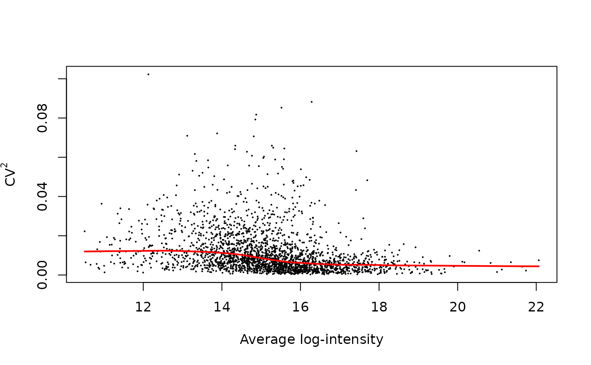

For each peptide, the squares of coefficient of variations are computed and plotted against average log-intensity. Additionally, a loess trend is fitted to the plotted values. Outlier observations (possibly originated from incorrect match between runs), are detected and highlighted. Users can use this plot as a diagnostic plot to determine if filtering by average intensity is required.
plotCV2(y, trend = TRUE, outlier = FALSE, sigma = 1, eps = 0.001, main = NULL)
| y | numeric matrix of log-intensity |
|---|---|
| trend | logical. Should a loess trend be fitted to CV^2 and mean values. Default to TRUE. |
| outlier | logical. Should outlier points be highlighted? Defaults to FALSE. |
| sigma | numeric. Kernel width in RBF kernel. Default to 1. |
| eps | numeric. This is threshold used to call a data point as an outlier. Default to 0.001 |
| main | character string. Title of the plot. Default to NULL |
A plot is created on the current graphics device.
Outliers are determined by computing the RBF kernels, which reflect the chance that an observed point belong to the dataset (i.e. is close enough in distance to other data points). Users can determine the cut-off for intensity-based filtering with respect to the mean log-intensity of the outlier points.
